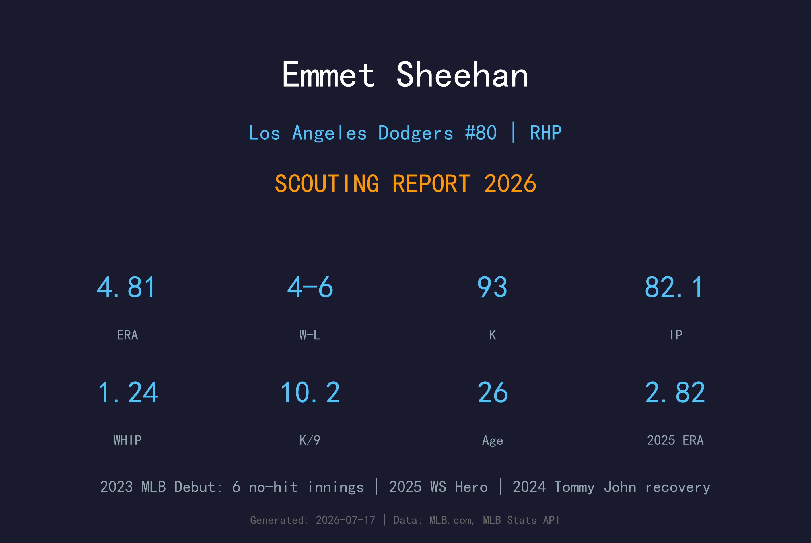
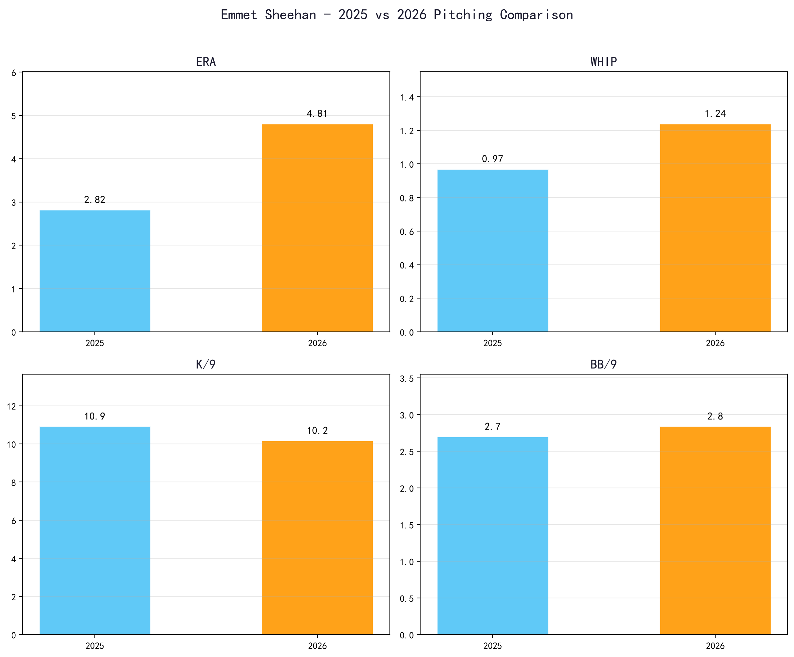
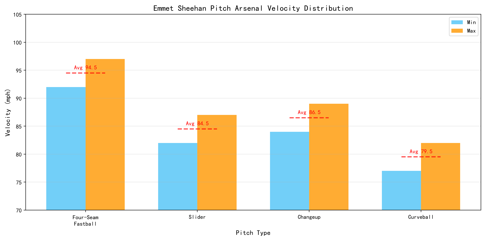
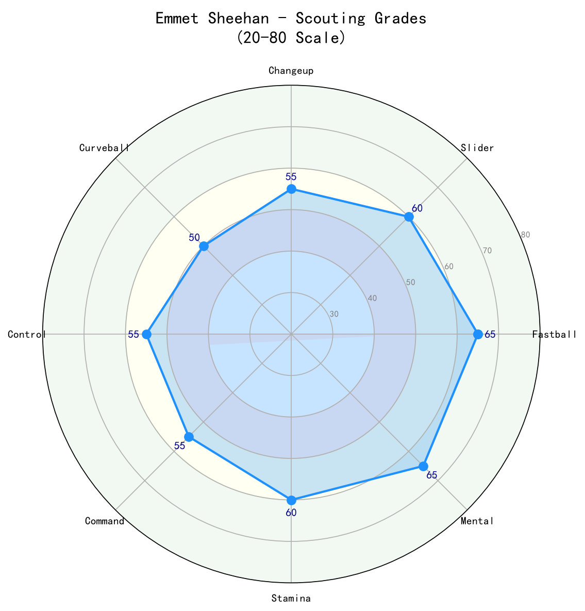

Los Angeles Dodgers #80 | 右投先发 | 2021年第6轮选中 | 2023年大联盟首秀

Emmet Sheehan 是道奇队近年来从大学投手培养体系脱颖而出的高侧投右投先发。他以高挑身材（6'5"）、高出手点和优异的三振能力著称，是大联盟最具潜力的年轻先发之一。
2023年大联盟首秀即对巨人投出6局无安打，成为道奇队史自 Ross Stripling 以来第二位在首秀至少投6局无安打的投手。2024年他因右前臂炎症整季缺席，但在2025年伤愈复出后表现亮眼，不仅帮助道奇队夺得世界大赛冠军，更在2025年世界大赛第3战18局大战中贡献2.2局无失分救援。
2026年他成为道奇轮值主力，虽然ERA从2025年的2.82上升至4.81，但K/9仍维持在10.2的高水准，显示他的三振能力稳定。他的身体条件和投球机制仍具备成为2-3号先发的天花板。
6月16日对旧金山巨人：6.0 IP，0 H，2 BB，3 K。成为自1967年 Billy Rohr 以来，首位生涯开局连续8.0局无安打的大联盟投手。同时成为道奇队史继 Ross Stripling 后第二位首秀至少6局无安打的投手。
2024年因右前臂炎症未能出赛，接受了完整康复与机制调整。这段经历促使他在2025年以更成熟的方式管理体能与局数。
6月18日从60天伤病名单激活，回到大联盟后缴出73.1 IP、89 K、ERA 2.82、WHIP 0.97 的压制级表现。9月21日对巨人投出7局一安打完封，10次三振，连续退休15名打者。世界大赛第3战18局大战中 后援 2.2局无失分，第7战第8局在领先一分时登板，在 首棒二垒安打 后连续解决3名打者守住胜果。
2026年成为道奇队先发轮值固定成员，17场先发、82.1 IP、93 K。ERA 4.81 较2025年有所上升，但仍是道奇稳定的局数提供者。
2025年ERA 2.82 → 2026年ERA 4.81，WHIP 也从 0.97 升至 1.24。主要差异来自被击球率（BABIP）和全垒打数增加（2025年7支 vs 2026年15支）。但三振能力稳定，K/9 仍维持在10.2。

📈 上图为近三年核心数据趋势。柱状图高度代表该年度表现，便于快速比较球员状态的上升或下滑。
| 赛季 | G | GS | W-L | ERA | IP | K | BB | WHIP | K/9 |
|---|---|---|---|---|---|---|---|---|---|
| 2025 | 15 | 12 | 6-3 | 2.82 | 73.1 | 89 | 22 | 0.97 | 10.92 |
| 2026 | 17 | 17 | 4-6 | 4.81 | 82.1 | 93 | 26 | 1.24 | 10.17 |

⚾ 上图为各球种球速区间（蓝=最低球速，橙=最高球速，红线=平均值）。球速差与位移差越大，打者越难锁定单一球路。
92-97 mph（Avg 95）
Sheehan 的招牌球种。凭借6'5"身高和高出手点，快速球具有极佳的居高临下角度，能制造大量挥空和软弱滚地球。2026年被全垒打数偏高，说明有时快速球进垒位置过于中心。
82-87 mph（Avg 85）
主要出局球，具有横向位移和锐利下坠。对付右打者时能够外角制造空挥，对付左打者时用来锁定内角。是快速球之后最重要的配球。
84-89 mph（Avg 87）
对付左打者的关键武器，与快速球的速度差约8 mph，出手点相似，能制造大量挥棒时间差。发展中的第三球种，若再提升一步可成为先发轮值的「X因素」。
77-82 mph（Avg 80）
展示型球种，用来打乱打者节奏和作为 两好球 配球。目前使用频率较低，但具备成为稳定第四球种的潜力，可进一步改善 他的球路组合 的深度。
Sheehan 采用高侧投机制（high three-quarter 出手点），出手点高且 放球点 稳定，让打者难以读取球路。6'5"的长臂和较远的投球距离，使他的快速球看起来比实际速度更快。这种机制对快速球和变化球的分离角度有帮助，但也要求肩部与前臂的康复管理必须到位。
快速球是他的核心武器。2026年K/9 10.17显示他仍具备 elite 的三振能力。问题在于当快速球被击中时，往往会形成长打。他需要更好的 in-zone 控球精准度，尤其是两好球后不要给打者中心球路。
滑球已经是可以信赖的出局球，但变速球和曲球仍在发展中。如果他能将变速球提升至接近滑球的水准，他的先发轮值价值将大幅提升——因为 目前 他面对 左打偏多的打线 时可能第三、第四趟打序出现危机。
2024年整季缺席提醒我们，他并非「铁臂」型投手。2025年从IL回归后，道奇谨慎管理他的局数，在季后赛中才最大化使用。2026年他能稳定吃82.1局是正面讯号，但能否成为180-200局的先发仍是未来几年的关键问题。
2025年世界大赛的关键救援证明了他的 mental toughness。年轻投手能在18局大战和G7的紧张局面中保持冷静，这是非常宝贵的无形资产。他的自信心和应变能力应能帮助他在2026年数据起伏时快速调整。

具备2-3号先发的潜力，若变化球再进一步，天花板可达更高。健康是决定上限的最大变量。
B+ 级 / 潜力先发投手
Emmet Sheehan 正处于从「潜力新秀」向「稳定轮值」转型的关键阶段。2025年的成功复出和2026年的稳定出赛证明他的身体足以应付大联盟先发负荷，但要在道奇这样争冠球队中担任前三号先发，他还需要提升变化球深度和减少长打伤害。
2026（下半季）：目标将ERA压回4.00以下，增加变速球使用比例，减少全垒打。全季有望达到150-160局、160+K。
2027-2028：若健康，有望成为道奇稳定2-3号先发，ERA 3.50-3.80，K/9 维持10+，年投180局左右。
2029+：如果变化球和控球都达到精英水准，有机会进入全明星讨论，并能在季后赛担任关键先发。
George Emmet Sheehan 出生于美国纽约州纽约市，成长于一个运动家庭——他的母亲 Maureen 曾在 Georgetown 大学打排球。高中毕业后，他进入 Boston College 就读并效力三年，在大学生涯中逐渐展现出顶级投手潜质。
2021年MLB选秀，道奇队在第6轮（总第192顺位）选中了他。与许多高中即被大笔签下的天才不同，Sheehan 是从大学体系中被道奇「培养」的典型代表。进入职业体系后，他在2A Tulsa 和 3A Oklahoma City 快速爬升，2023年在小联盟缴出2.43 ERA、102 K、.131 打击率的压制级数据，成为 Texas League 月度最佳投手和季后赛全明星。
2023年6月16日，Sheehan 完成大联盟首秀。面对旧金山巨人，他投出6局无安打、仅2次保送，震惊联盟。随后他更创下生涯开局连续8.0局无安打的纪录。虽然他在2024年因右前臂炎症整季报销，但2025年伤愈复出后，他不仅用73.1局、2.82 ERA 的表现证明实力，更在2025年世界大赛的18局大战中挺身而出，成为道奇夺冠的无名英雄之一。
2026年，他成为道奇先发轮值的重要成员。虽然数据较2025年有所回落，但他的三振能力、大赛经验和身体条件，都使他成为道奇未来轮值中不可忽视的一员。场外，他以低调、专注著称，深受道奇投手教练团信任。